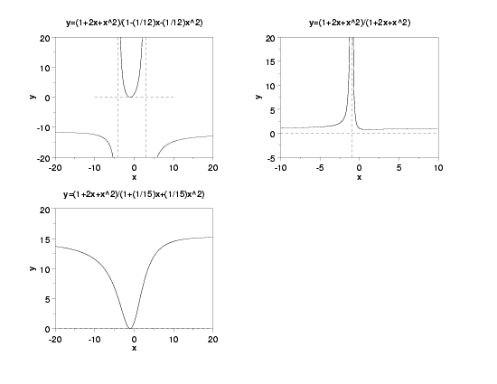
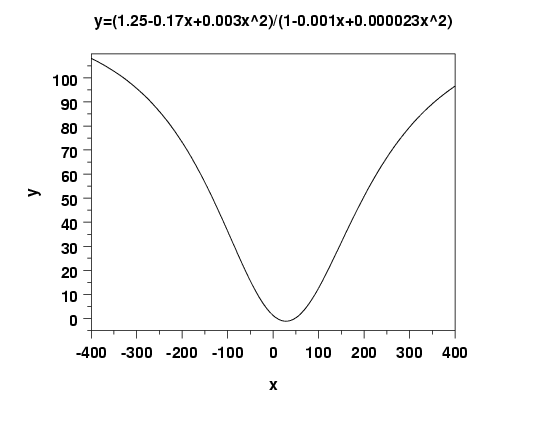
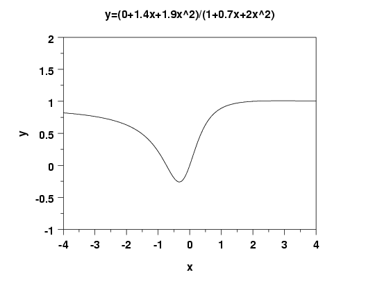
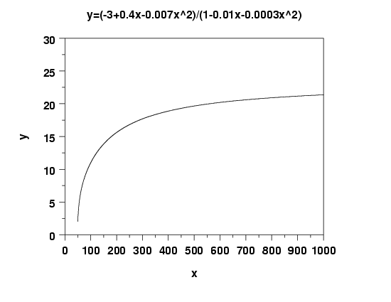
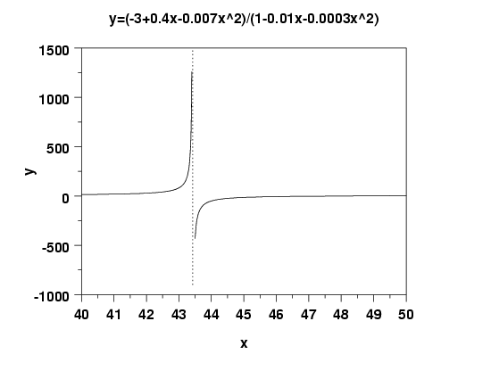
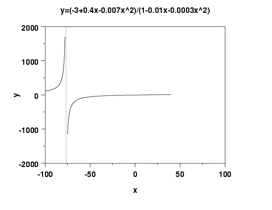

|
4.
Process Modeling
4.8. Some Useful Functions for Process Modeling 4.8.1. Univariate Functions 4.8.1.2. Rational Functions
|
|||
|  | |
|---|---|
| Function: | \( \displaystyle f(x) = \frac{\beta_0 + \beta_1x + \beta_2x^2}{1 + \beta_3x + \beta_4x^2}, \ \ \beta_2 \neq 0, \ \beta_4 \neq 0 \) |
| Function Family: |
Rational |
| Statistical Type: |
Nonlinear |
| Domain: |
\( \displaystyle (-\infty, \infty) \)
with undefined points at \( \displaystyle x = \frac{-\beta_3 \pm \sqrt{\beta_3^2 - 4\beta_4}} {2\beta_4} \) There will be 0, 1, or 2 real solutions to this equation corresponding to whether \( \displaystyle \beta_3^2 - 4\beta_4 \) is negative, zero, or positive. |
| Range: | The range is complicated and depends on the specific values of \( \beta_1, \, \ldots , \, \beta_5 \). |
| Special Features: |
Horizontal asymptotes at:
\( \displaystyle y = \frac{\beta_2}{\beta_4} \) and vertical asymptotes at: \( \displaystyle x = \frac{-\beta_3 \pm \sqrt{\beta_3^2 - 4\beta_4}} {2\beta_4} \) There will be 0, 1, or 2 real solutions to this equation corresponding to whether \( \displaystyle \beta_3^2 - 4\beta_4 \) is negative, zero, or positive. |
|
Additional Examples: |
|
|  | |
|  | |
|  | |
|  | |
|  | |

{kind=link}
{kind=link}
{kind=link}
{kind=link}
{kind=link}
{kind=link}